Рыбалко Евгения
23 ПМИ
u82673
Лабораторная работа №2
📁 Подготовка к выполнению работы
Содержимое локальной папки: папка со скриншотами (screenshots), file.tar.gz, image.png, index.php, index.html.
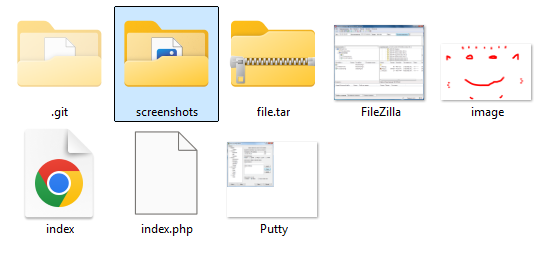
рис. 1 — содержимое папки
Создание файла index.html:
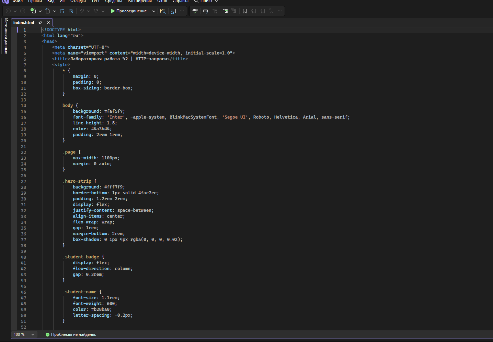
рис. 1.1 — создание index.html
📤 Перенос файлов с локальной папки в репозиторий с помощью Git
Локальный репозиторий создан, все файлы перенесены при помощи Git Bash в репозиторий на Github.
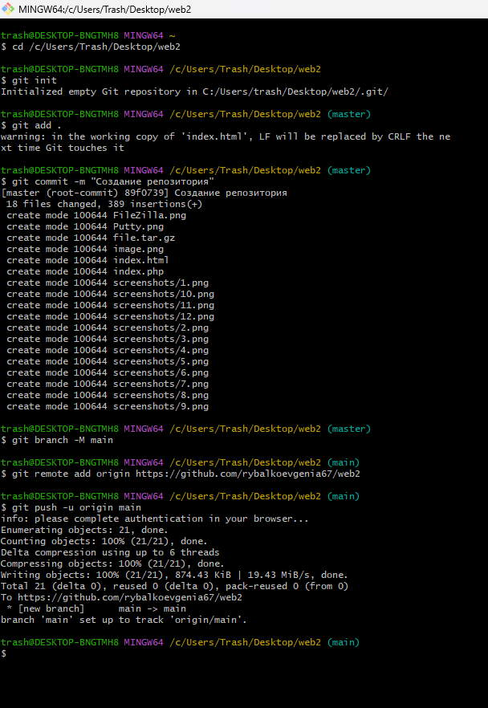
рис. 2 — git push
📥 Клонирование репозитория на сервер
git clone https://github.com/rybalkoevgenia67/web2 web2
Репозиторий склонирован в домашнюю директорию, создан каталог ~/www/web2, файлы скопированы в папку web2.
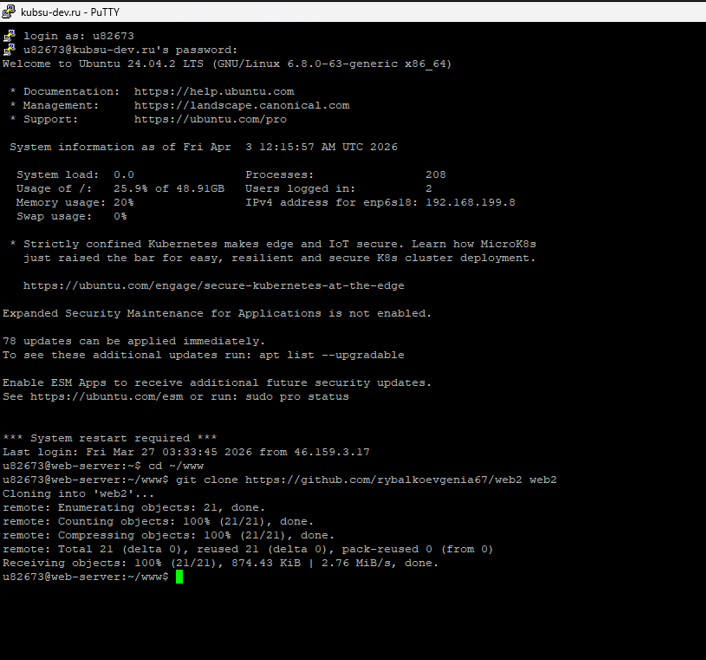
рис. 3 — git clone
🔌 Настройка PuTTY для подключения
Для отправки запросов используется PuTTY в режиме Raw (прямое TCP-соединение). Адрес: u82673.kubsu-dev.ru, порт 80.
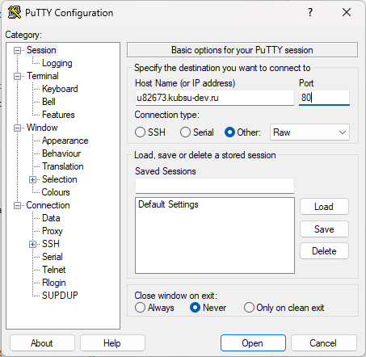
рис. 4 — конфигурация PuTTY
1. Получить главную страницу методом GET в протоколе HTTP/1.0
GET / HTTP/1.0
Что делает: Запрос корневой директории сайта по протоколу HTTP/1.0. Сервер возвращает содержимое, которое в данном случае является стандартной страницей Apache (так как в корне нет индексного файла).
Результат:
Статус: HTTP/1.1 200 OK – запрос выполнен успешно.
Заголовки: Server: Apache/2.4.58 (Ubuntu), Content-Length: 10671, Content-Type: text/html; charset=UTF-8.
Тело ответа содержит стандартную страницу-заглушку Apache2 Ubuntu Default Page.
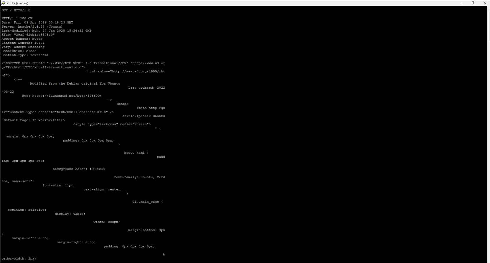
рис. 6 — ответ сервера
2. Получить внутреннюю страницу методом GET в протоколе HTTP/1.1
GET /web2/index.php HTTP/1.1
Host: u82673.kubsu-dev.ru
Connection: close
Что делает: Запрашивает файл index.php из каталога /web2/. Скрипт специально настроен так, что возвращает статус 404, но при этом выполняет код и генерирует тело ответа.
Результат:
Статус: HTTP/1.1 404 Not Found – задан самим скриптом.
Заголовок Content-Type: text/html; charset=UTF-8.
Тело ответа содержит вывод скрипта: Array ( ) Привет, мир! (пустой массив $_POST и строка).
Примечание: статус 404 не мешает получению содержимого – задание требует сам факт ответа и его анализ.
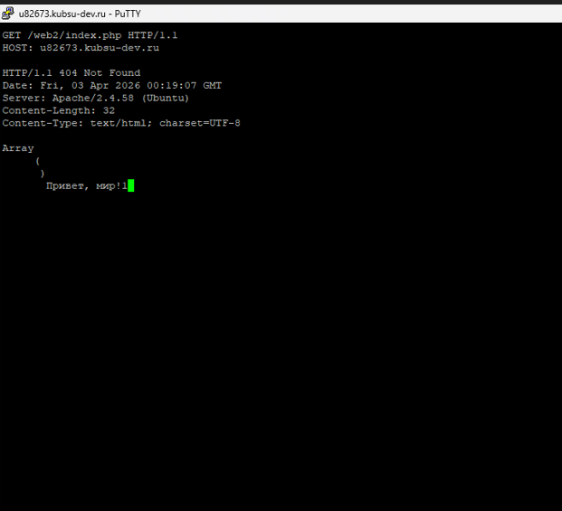
рис. 7 — запрос index.php
3. Определить размер файла file.tar.gz, не скачивая его
HEAD /web2/file.tar.gz HTTP/1.1
Host: u82673.kubsu-dev.ru
Connection: close
Что делает: Метод HEAD возвращает только заголовки, без тела. Позволяет узнать размер файла из поля Content-Length.
Результат:
Статус: HTTP/1.1 200 OK – файл существует.
Заголовок Content-Length: 11335 – размер файла в байтах.
Тип файла: Content-Type: application/x-gzip.
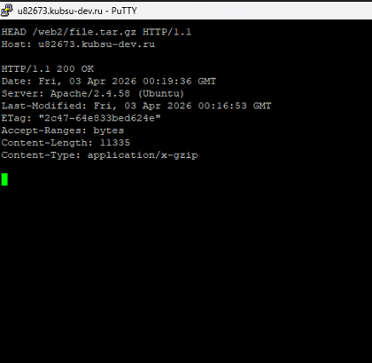
рис. 8 — размер file.tar.gz
4. Определить медиатип ресурса /image.png
HEAD /web2/image.png HTTP/1.1
Host: u82673.kubsu-dev.ru
Connection: close
Что делает: Аналогично пункту 3, определяем MIME-тип изображения.
Результат:
Статус: HTTP/1.1 200 OK.
Заголовок Content-Type: image/png – медиатип PNG.
Размер: Content-Length: 10506 байт.
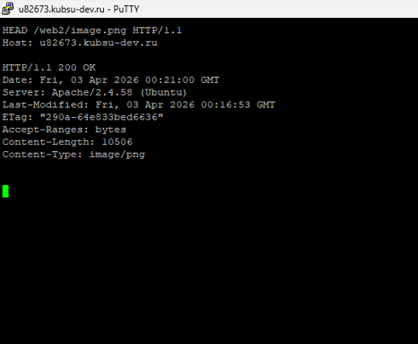
рис. 9 — MIME-тип PNG
5. Отправить комментарий на сервер по адресу /index.php (POST)
POST /web2/index.php HTTP/1.1
Host: u82673.kubsu-dev.ru
Content-Type: application/x-www-form-urlencoded
Content-Length: 13
Connection: close
comment=Hello
Тело запроса: comment=Hello (длина 13 байт).
Что делает: Отправляет POST-данные (имитация формы) на index.php. Скрипт возвращает статус 404 (задано в коде), но выводит содержимое массива $_POST.
Результат:
Статус: HTTP/1.1 404 Not Found (задан скриптом).
Заголовок Content-Type: text/html; charset=UTF-8.
Тело ответа: Array ( [comment] => Hello ) Привет, мир! – значение поля comment отобразилось корректно.
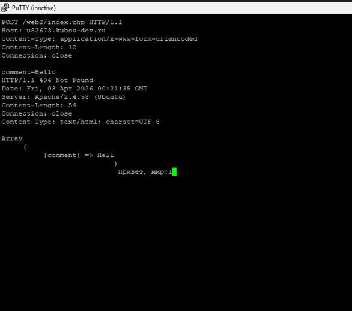
рис. 10 — POST запрос
6. Получить первые 100 байт файла /file.tar.gz
GET /web2/file.tar.gz HTTP/1.1
Host: u82673.kubsu-dev.ru
Range: bytes=0-99
Connection: close
Что делает: Заголовок Range запрашивает только указанный диапазон байт – первые 100 байт архива.
Результат:
Статус: HTTP/1.1 206 Partial Content – частичное содержимое.
Заголовок Content-Range: bytes 0-99/11335.
Content-Length: 100 – длина переданных данных.
Тело содержит первые 100 байт файла (бинарные данные, отображаемые как нечитаемые символы).
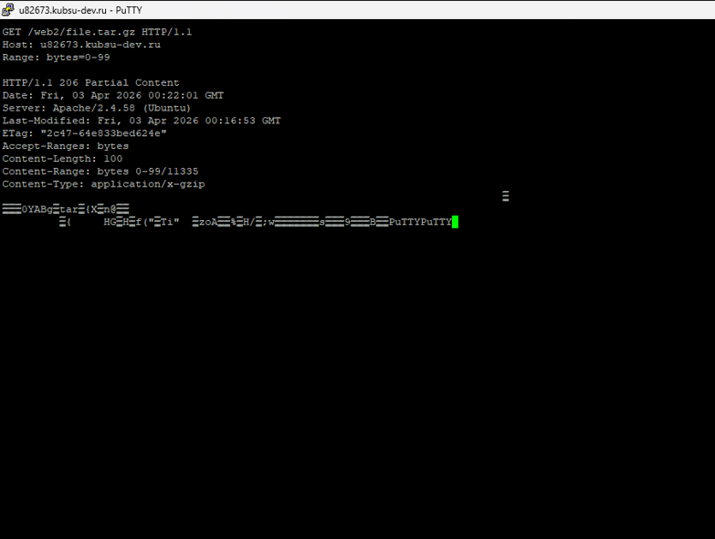
рис. 11 — Range-запрос
7. Определить кодировку ресурса /index.php
HEAD /web2/index.php HTTP/1.1
Host: u82673.kubsu-dev.ru
Connection: close
Что делает: Запрос HEAD для получения только заголовков. Позволяет узнать кодировку из поля Content-Type.
Результат:
Статус: HTTP/1.1 404 Not Found (задан скриптом).
Заголовок Content-Type: text/html; charset=UTF-8 – кодировка UTF-8 указана явно.
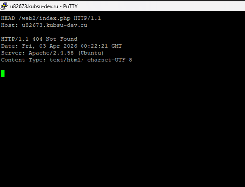
рис. 12 — кодировка UTF-8